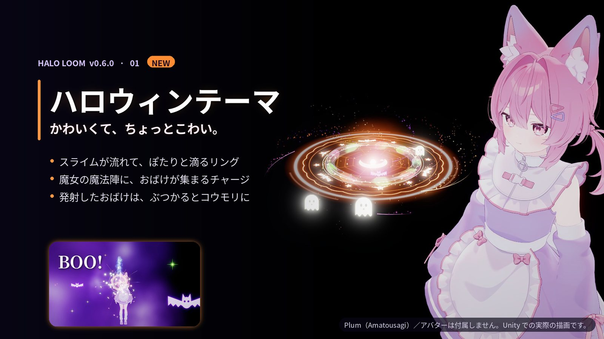
ハロウィンテーマ
バブルリングの中をスライムが流れ、魔女の魔法陣でチャージ。放ったおばけは、ぶつかるとコウモリになって弾けます。
HALO LOOM · USER GUIDE
Halo Loom は、光・装飾・動きを組み合わせてハローを作る Unity Editor ツールです。作ったハローは VRChat で手に取り、チャージして、空へ放てます。
製品版 v0.6.0 · 2026-10-21
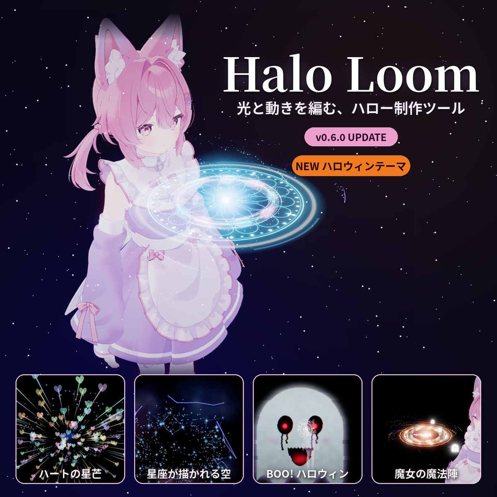
ハロウィンテーマの追加と、光の演出・音・メニューの全面リニューアルです。画像はすべて Unity での実際の描画です。

バブルリングの中をスライムが流れ、魔女の魔法陣でチャージ。放ったおばけは、ぶつかるとコウモリになって弾けます。
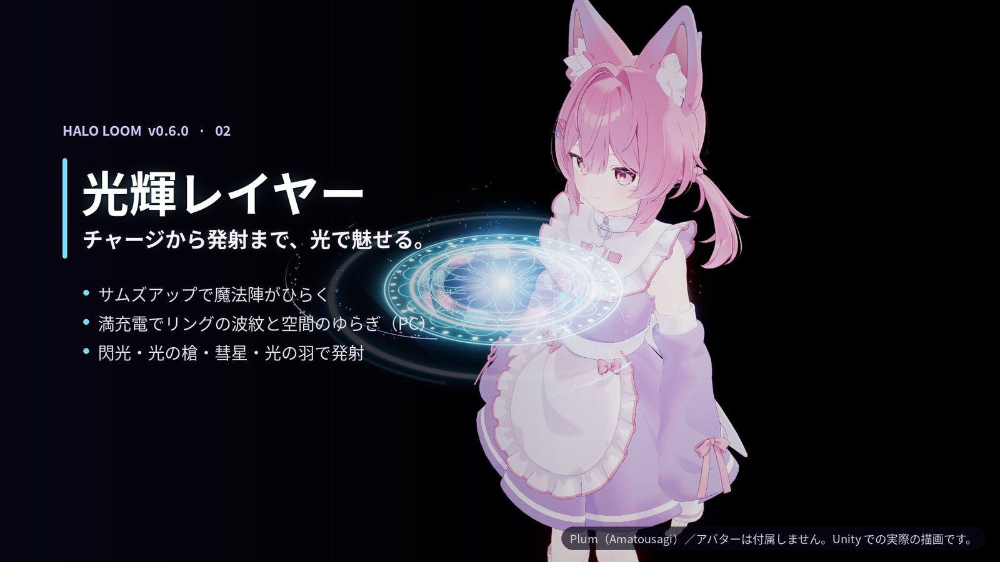
チャージの魔法陣、満充電の波紋、閃光・光の槍・彗星・光の羽まで、光の演出を作り直しました。
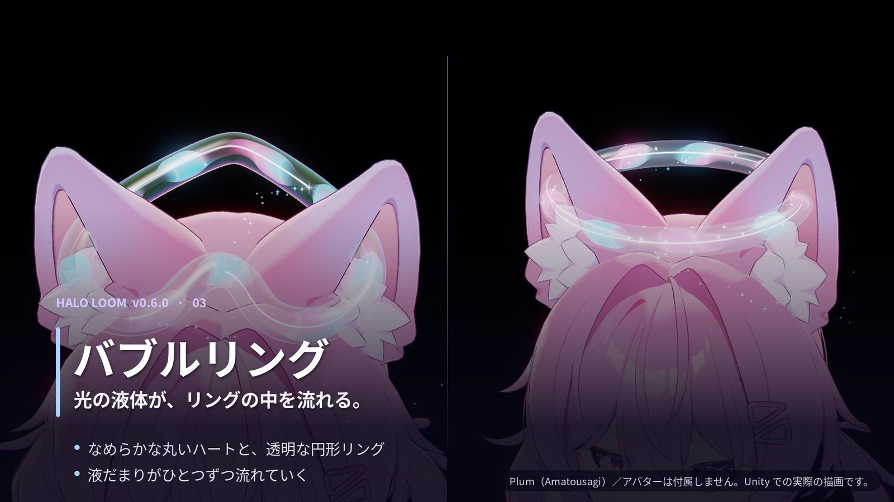
なめらかになった丸いハートと、透明感を増した円形リング。液だまりがひとつずつ流れていきます。
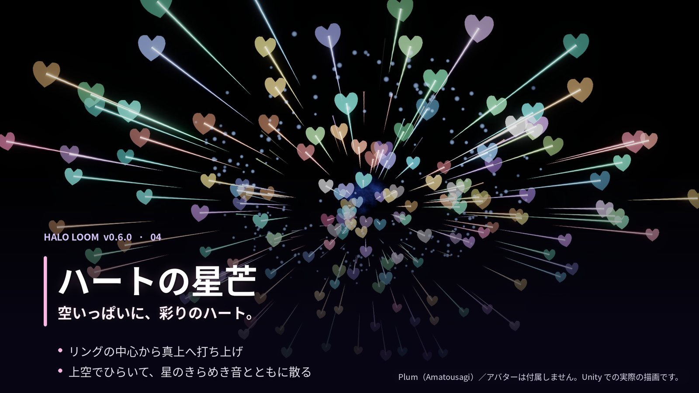
リングの中心から真上へ打ち上げ、空いっぱいに彩りのハートが広がります。
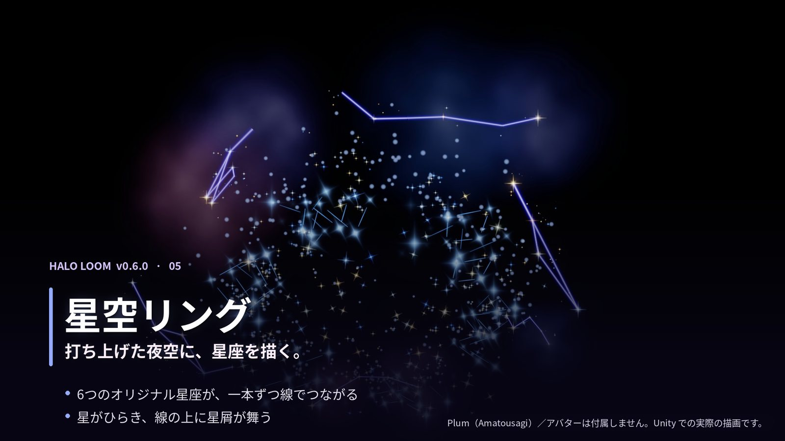
打ち上げた夜空に、6 つのオリジナル星座が一本ずつ描かれていきます。
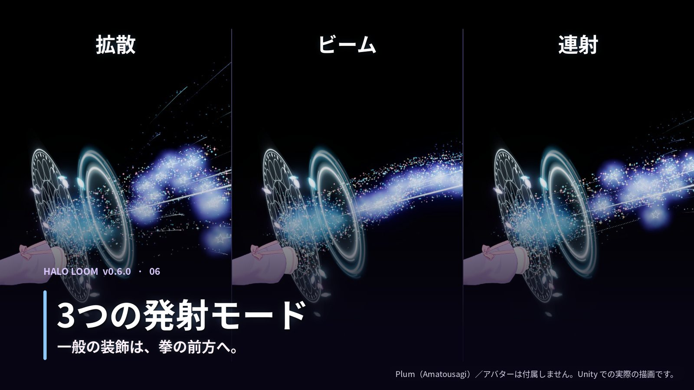
通常の装飾は、拳の前方へ「拡散・ビーム・連射」で飛んでいきます。
削除しないもの：Avatar、ほかの Halo、VRChat SDK／Modular Avatar／NDMF、外部素材、所有関係が分からない Generated、.HaloLoomArchive（復元用）。HaloMaker フォルダーを丸ごと消す手順ではありません。
作り直しに備えて、いまの設定（色・素材・動き）をメモかスクリーンショットで控えておくと安心です。
最後に、対象アバターで Build & Test を行い、VRChat 内の操作を確認してください。
確認環境：Unity 2022.3.22f1 · PC · Built-in Render Pipeline · VRChat Avatars SDK 3.10.5 · Modular Avatar 1.18.7 · NDMF 1.14.8（SDK・MA・NDMF は別途導入してください）。Quest・モバイル・URP は確認対象外です。
.unitypackage をまるごとインポートし、メニューの 黒猫Dev › Halo Loom を開きます。
Hierarchy のアバターを「Avatar」欄へドラッグ。Humanoid なら頭（Head）が取り付け先になります。手首や背中に付けたいときは「取り付け先」を変更します。
「形状と外観」タブの一番上「基本エフェクト」で、通常エフェクトかスペシャルリングを選びます（くわしくは次の章）。
半径を合わせ、「モーション」タブで動きを選びます。
「Halo を作成」を押し、プレビューで確認。あとから変えたら「変更を適用」を押します。
シーンを保存し、SDK の Build & Test で実際に持って・チャージして・放ってみましょう。
無料版はメニュー 黒猫Dev › Halo Loom Free から開きます。流れは同じですが、使える見た目と動きが限られます。
画面は 4 つのタブに分かれています。迷ったら「形状と外観」から上から順に決めていけば大丈夫です。
光のパーティクル・エネルギーライン・バブルクラスターから選び、Halo の形（円形・ハート・花びら）と表示エフェクト（エフェクトのみ／装飾のみ／エフェクト＋装飾）を組み合わせます。発射は拳の前方へ、3 つのモードで飛びます。
円形バブルリング・ハートバブルリング・星空リング。形はリングごとに決まっていて、発射するとリングの中心から空へ打ち上がる専用の演出が付きます。表示エフェクトは「リングのみ」か「リング＋装飾」。
ハロウィンテーマは、円形バブルリングとハートバブルリングでのみ選べます。
浮遊・螺旋・跳躍・編隊・演出の 5 カテゴリーから選べます。「ランダム A／B／C」にすると、相性のよい 3 つの動きを順番につないで再生します（組み合わせは保存され、毎周抽選し直すものではありません）。衝突系の動きは見た目の演出で、物理判定はありません。
中空の立体リングに小さな星が散らばり、またたき・短い閃光・移動・軌跡を調整できます。星空自体は専用の動きで、組み合わせた装飾には通常のモーションを設定できます。
星・クリスタル・ハート・羽根など 20 種類の装飾を内蔵。数・配置・向き・大きさ・色・発光を調整できます。自作の素材も使えます（「自作素材と取り付け位置」参照）。
プレビューは反映済みの内容を再生します。設定を変えたら「変更を適用」してから確認しましょう。別案を残したいときは「複製を作成」が便利です。
VRChat の中では、自分の手でハローを扱います（左右どちらの手でも OK）。
光環に手で触れてから握ると、手に取れます。手を開いても同じ手に残ります。
持っている手で親指を立てたまま、設定した時間（初期 3 秒、2〜4 秒）待ちます。魔法陣が開き、チャージ音が満充電まで続きます。途中で手の形を変えると中止。
満充電の合図のあと、頭の元の位置から離れたところで握ると発射。演出が終わっても手に残るので、続けてチャージできます。
持っている手を頭の元の位置へ戻し、手を開いてからもう一度握ると収納。満充電でも収納が優先されます。
元の手を開き、反対の手で触れて握ります（チャージはやり直し）。
拳の前方（手首から指の付け根の方向）へ。手首の向きに追従します。
リングの中心から真上へ打ち上がり、上空で広がります。
リングの演出は真上へ、おばけだけ拳の前方へ飛び出し、壁や人にぶつかるとコウモリになって弾けます（他人の画面を覆う演出ではありません）。
左手首の Halo を左手で（右も同様）持つと、元の位置に触れ続けるため、発射より収納が優先される場合があります。反対の手で持つか、手と一緒に動かない取り付け先を選んでください。
PC：Halo Loom › PC › 「ハローを展開」→「ON:チャージ / OFF:発射」を ON → 満充電後に OFF で発射。途中で OFF にすると中止です。
反応しないときは、VRChat のジェスチャー固定を解除し、実際の手の形が「親指を立てる／握る」に切り替わっているか確認してください。
「表示エフェクト」を「装飾」または「エフェクト＋装飾」にします。
素材の種類をカスタム素材にして、Project ウィンドウの Prefab（または Mesh と Material）を指定します。Hierarchy のオブジェクトは直接使えません。
数・配置・大きさを調整し、向き（パスに沿う／外向き／中心向き など）と回転補正を合わせます。
「変更を適用」。元の Prefab・Mesh・Material は書き換えず、生成した側を使います。
「取り付け先」を手首・胸・背中などの Transform に変えられます。部位に合わせて位置・回転・半径を調整してください（自動フィットではありません）。
素材を増やすほど負荷も増えます。少ない数から確認してください。第三者素材の VRChat 対応は保証できません。素材自身のアニメーションには Generic の AnimationClip を指定できます（Humanoid・Animation Event は非対応）。
| 無料版 | 製品版 | |
|---|---|---|
| Halo の形 | 円形 | 円形・ハート・花びら |
| 見た目 | 柔らかい光点・中空の五芒星 | 光のパーティクル・エネルギーライン・バブルクラスター・スペシャルリング（円形／ハートバブル・星空）・ハロウィンテーマ |
| 動き | 穏やかな浮遊・波乗り周回 | 20 種類＋ランダム A／B／C |
| 装飾 | — | 内蔵 20 種類・自作 Prefab／Mesh＋Material |
| VRChat 内の操作 | — | 持つ・チャージ・3 つの発射・収納・PC 操作・メニュー・効果音（SDK＋MA＋NDMF が必要） |
| 色・大きさ・取り付け先 | ○ | ○ |
| 時間制限・透かし | なし | なし |
無料版は製品版なしで使え、同じプロジェクトに共存できます（互いの生成物は編集しません）。価格・配布条件は BOOTH をご確認ください。
パッケージ全体（Editor・Shaders・Visuals・Audio）を再インポートしてください。製品版の場所は Assets/黒猫Dev/HaloMaker、無料版は Assets/黒猫Dev/HaloLoomFree です。
「変更を適用」を押してください。「変更を即時反映」がオフのときは、欄を変えるだけでは生成物は更新されません。上部の「編集中の Halo」が目的の Halo かも確認しましょう。
Scene ビューでは、アニメーションが動いていないため、ゲーム内では隠れている部品が見えることがあります。複製したアバターが重なっていないかも確認してください。
ジェスチャー固定を解除し、自分の手で光環に触れてから握ってください。変更後は「変更を適用」→ シーン保存 → Build & Test で確認します。
装飾の数や星の密度を下げ、軽い素材で確認してください。「常時のきらめき」をオフにするのも有効です。
画像は Unity Editor（Built-in）での描画です。ワールドの明るさや透明の重なりで見え方は変わります。
解決しない場合は、使用版・Unity のバージョン・再現手順・Console のエラーを添えて、BOOTH の商品ページからお問い合わせください。 BOOTH
外部素材の出典です。各素材のライセンスは、Halo Loom 本体の利用規約とは別に扱われます。
Take（取り出し）・Return（収納）は黒猫Dev によるオリジナル合成音です。ほかの効果音は以下の Pixabay 素材を切り出し、音量・フェード・フィルターなどを加工して使用しています（Pixabay Content License）。効果音を単体で再配布・販売することはできません。
| 用途 | 素材 | 作者 | Pixabay ID |
|---|---|---|---|
Charge | Holy Spell Cast | DRAGON-STUDIO | 450460 |
Scatter | Soul Steal 02 | freesound_community | 43483 |
Beam | Healing Magic (5) | Yodguard | 378667 |
Volley | Sword Schwing | freesound_community | 40520 |
Twinkle | Magic Twinkle | Universfield | 244951 |
Twinkle | Chimes | freesound_community | 7035 |
Particle Pack (1.1) — Kenney（kenney.nl）、CC0 1.0。
ハロウィン・光輝レイヤーのテクスチャ、メニューアイコン、ハートなどは Halo Loom のための制作素材です（星芒の一部は AI 生成テクスチャを含みます）。CC0 の表示は該当する外部素材についての案内で、Halo Loom 全体を CC0 とするものではありません。
画像・動画のアバター：プラム Plum／あまとうさぎ（こまど）様。アバター・撮影シーン・第三者の有料素材は付属しません。